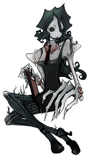
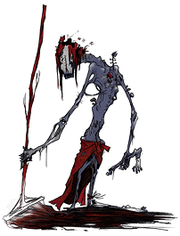
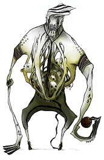
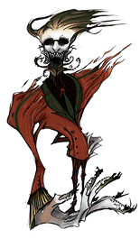

22 |
Creature |
 |
Di seguito sono elencate le creature che verranno incontrate durante il gioco:
Studenti Nonostante a Jake sembrino i suoi compagni di classe, queste creature dimostrano davvero poca umanità. Si nascondono nella penombra, in attesa di trascinarvici Jake, se si avvicina troppo. Sono troppo furbi, o troppo timidi, per uscire dalla penombra ed attaccare Jake.
Skitters Abbiamo tutti visto uno scarafaggio a scuola, specialmente in sala mensa, ma quegli insetti non erano davvero così grandi. Gli Skitters sono degli scarafaggi enormi che corrono via quando vengono colpiti dalla luce. Al contrario degli Studenti, non hanno senso dell’orientamento e spesso finiscono proprio in mezzo alla luce, friggendo al suolo in pochi secondi.
 L’Insegnante di Inglese Questa creatura, una variazione macabra di una delle insegnanti di Inglese del liceo, richiede che la classe rimanga in silenzio e fa a brandelli qualsiasi cosa che disturbi la lezione. Le piacciono le aule buie, e l’inserimento di qualsiasi luce la fa infuriare.
 Il Bidello Questo oscuro custode sembra essere capace di usare lo scopettone per pulire qualsiasi tipo di luce che viene introdotta nella scuola. Fischietta un motivetto inquietante, e lo si può trovare a pulire in giro in sala mensa. Sembra quasi che l’accendere qualsiasi luce gli provochi dolore fisico.
Questi piccoli controlla-corridoi sono due secchioni che s’impicciano degli affari degli altri, fanno la spia, e si aggirano per i corridoi del liceo, cercando quelli che bigiano mentre dovrebbero essere in classe. Il ragazzo fa la ronda, mentre la ragazza cerca possibili studenti pigri. Grazie al Cielo, Jake ha un certo carisma nei confronti delle ragazze.
 L’Allenatore Questo insegnante di educazione fisica è enorme, ululante e alimentato dal testosterone, e non ha nessuna pazienza per chi si dimostra più debole durante la sua lezione. Tira fuori un pallone dal suo stomaco e lo tira agli ospiti inattesi. A Jake servirà più della semplice torcia elettrica per eliminare questo mostro.
 Il Preside Il supremo docente è discreto e vendicativo, e resta seduto nel suo accogliente ufficio, dietro alla sua accogliente scrivania. Qualsiasi cosa Jake faccia sarà disfatta altrettanto velocemente. Jake dovrà agire velocemente, utilizzando quanti più oggetti può al fine di sconfiggere questa creatura. |
 I Controlla-Corridoi
I Controlla-Corridoi
 |
 |
 |